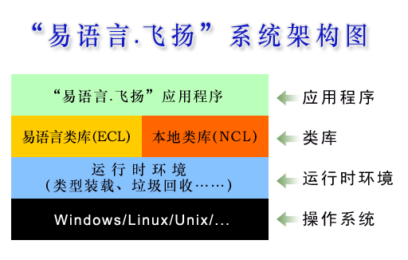

“易语言.飞扬”是一种易学易用、高效实用、面向对象、跨平台的计算机编程语言。
它是一个全新的易语言版本，从核心架构上明显区别于原有的易语言（4.x及以前版本），它与以前的易语言共同构成了一个可以面向更广泛应用层次的集成开发平台。
它的语法脱胎自“类C语言”，因而在语法上与C、C++、Java、C#等编程语言有很多相似甚至相同之处。
它是完全面向对象的编程语言，因而在面向对象机制上与同为完全面向对象的Java、C#等编程语言有相似甚至相同之处。
在本文中，“易语言.飞扬”被简称为“易语言”。
易语言的主要特性：
相比其他同类编程语言的主要特点：

《“易语言.飞扬”白皮书》第一个公开发布版本，主要描述语法、类库、编译器等核心内容。
友好名称 'Print <something> to console' = 控制台.输出行(something);
公开 类 启动类
{
公开 静态 启动 ()
{
控制台.输出行("祖国您好！");
控制台.'输出"飞扬的祝福"并换行';
'Print "Hello world!" to console';
}
}
请将以上内容存储为“hello.ef”文件，注意编码格式必须为 Unicode（UCS-2/UTF-8/UTF-16）。请参考：字符和编码。
Windows操作系统下请使用以下命令行将“hello.ef”编译为可执行文件“hello.exe”，并运行编译生成的“hello.exe”：
ec hello.ef -ecl_name="程序" -starter_cls="启动类" -out_mode=runable -out="hello.exe" hello.exe
Linux操作系统下请使用以下命令行将“hello.ef”编译为可执行文件“hello”，并运行编译生成的“hello”：
./ec hello.ef -ecl_name="程序" -starter_cls="启动类" -out_mode=runable -out="hello" ./hello
以上程序运行后，将在控制台输出以下内容：
祖国您好！ 飞扬的祝福 Hello world!
注意：要编译易语言源程序或运行易语言编译生成的可执行文件，需确保易语言系统库（系统.ncl）位于当前目录中，或位于系统环境变量“ECLS_PATHS”所指定的目录内。 请参考：类库的加载，类库的启动。
本文主要使用 EBNF 描述易语言语法。
EBNF要点：
EBNF表达式中，粗体部分表示易语言代码，斜体部分表示用户定义名称（标识符）或另一个EBNF表达式。
易语言代码由任意多个源代码文件（*.ef）和一个可选的“类库信息定义文件”文件组成。
源代码文件结构：
引入类库
类定义 | 接口定义 | 枚举定义 | 友好名称定义
“引入类库”语法：
引入 类库名称 {, 类库名称};
使用任何非本程序或本类库中定义的类型之前，都必须“引入”相应的类库。系统库因为必然被所有程序和类库使用，将被自动引入。
“引入”语句应位于源代码文件的首部。引入的类库只对当前文件有效。
使用已被“引入”的类库中的类型时，如果不存在歧义，可以使用类型的“短名称”。如“系统.对象”可简化为“对象”。请参考：类型名称。
类库信息定义文件用于给编译器提供类库定义信息，其文件后缀名固定为“.inf”，文件名称可任意（但需符合操作系统规定）。
文件格式：
类库 类库名称 [属性表];
可用于属性表的系统定义属性有：
| 系统定义属性名称 | 类型 | 说明 |
|---|---|---|
| 启动类 | 文本 | 指定程序从哪一个类开始启动。仅当编译可执行文件时必须。 |
| 分类信息表 | 文本 | 指定类库的分类信息，各项之间以“,”分隔 |
| 依赖文件表 | 文本 | 指定类库所依赖的外部文件，各项之间以“,”分隔 |
| 作者 | 文本 | 指定类库作者 |
| 其他信息 | 文本 | 指定其他任意文本信息 |
示例：
类库 我的类库 <启动类 = "启动类" 作者 = "大连大有吴涛易语言软件开发有限公司">;
编译时，请将 .inf 文件跟其他所有源代码文件一并提供给编译器，文件名之间以空格隔开，如：
ec ecl.inf 1.ef 2.ef ...
.inf 文件是可选的。如果不提供该文件，则必须通过编译器命令行参数指定“类库名称”和/或“启动类”。请参考：编译器。
“//”表示单行注释的开始，直到本行结束。
“/*”表示多行注释的开始，“*/”表示多行注释的结束。
多行注释内部允许嵌套使用单行注释和多行注释。
注释不属于可编译代码，编译时将被忽略。
//这是单行注释
整数 i = 100; //后半行是注释
/*
这是多行注释，
可以写多行
*/
/*
支持嵌套使用注释。
//这是第一层嵌套
/*
这是第二层嵌套
/* 第三层嵌套 */
*/
*/
易语言有以下关键字：
整数 小数 逻辑 文本 字节集 如果 又如 否则 假如 为 为其他 开始 循环 计次循环 C循环 到循环尾 跳出 返回 循环尾 类库 类 接口 枚举 常量 友好名称 基类 本对象 空 真 假 检查
由于在某些特殊场合可能会造成语义混淆，不建议将以上关键字用作标识符。
关键字“检查”仅在调试版程序中有效，用于确认其参数为逻辑值“真”――如果为“假”将导致运行时错误。 在编译为发行版（非调试版）程序时，“检查”语句将被整体忽略。参考：编译器。
检查语句语法：
检查(逻辑表达式)
参考：表达式、语句和语句块。
检查语句示例：
检查(1 + 1 == 2);
标识符是用户定义的用于标识特定代码元素的字符组合。 变量名称、类型名称（类名称/接口名称/枚举名称）、方法名称、成员名称（类成员名称/枚举成员名称）等均被称为标识符。
标识符由英文字母、下划线、数字、和其他非ANSI字符（包括汉字）组成，其中数字不允许出现在标识符首部。
标识符最多允许127个字符。
易语言是强类型语言，每个数据都有其明确的数据类型，不同数据类型的数据之间进行类型转换时会执行严格的检查。
易语言中的数据类型分为“基本数据类型”和“扩展数据类型”。
基本数据类型是系统内置的，扩展数据类型是在程序和类库中定义的。这是两者的主要区别。
易语言的基本数据类型共有 5 种：整数、小数、逻辑、文本、字节集。
| 数据类型 | 占用字节数 | 取值范围 | 数据示例 | 初始值 | 说明 |
|---|---|---|---|---|---|
| 整数 | 4 | -2,147,483,648 ~ 2,147,483,647 | 123 | 0 | 32位有符号整数 |
| 小数 | 8 | 1.7e-308 ~ 1.7e+308 | 1.23 | 0 | 64位双精度浮点数 |
| 逻辑 | 4 | 真 假 | 真 | 假 | 只有两个值，真或假 |
| 文本 | "中国人" 或 ["易语言.飞扬"] | "" | 被双引号“""”包含的为普通文本，内部可以使用“转义字符”；被“["”和“"]”包含的为“原始文本”。文本以Unicode格式存储，多个文本或文本变量之间可以用“+”连接。 | ||
| 字节集 | { 0, 1, 2, 3 } | {} | 字节集是“字节”的顺序组合，每一个成员数值都必须大于等于0且小于等于255 |
整数的表示方法：
| 整数 | 示例 | 表示方法 |
|---|---|---|
| 10进制 | 123, -123 | [-]{0|1|2|3|4|5|6|7|8|9}+ |
| 16进制 | 0xE0 | 0x|0X{0|1|2|3|4|5|6|7|8|9|a|b|c|d|e|f|A|B|C|D|E|F}+，16进制数值以“0x”或“0X”为前缀，后续字母大小写均可 |
| 2进制 | 0b10100011 | 0b|0B{0|1}+，2进制数值以“0b”或“0B”为前缀 |
小数的表示方法：
[-]数.数[d|D|e|E[-]数]
其中“数”的表示方法：
{0|1|2|3|4|5|6|7|8|9}+
小数示例：
1.01 1.2e30 1.2e-30
需要注意的是：与其他语言不同，易语言不通过小数点来确认小数立即数，而代替用数值精度来确认。 譬如“1.0”，由于其精度可以被整数“1”替换，易语言将认为其类型是整数而非小数，而“1.01”则将被确定为小数。 如果要指定某具有整数精度的数值为小数立即数，请使用“强制类型转换”来明确其类型，如：“(小数)1.0”。
字节集的表示方法：
{ [整数 {, 整数}] }
字节集示例：
{ }
{ 1, 2, 255 }
可用于普通文本（非“原始文本”）中的转义字符：
| 转义字符 | 含义 |
|---|---|
| \n | 换行 |
| \r | 回车 |
| \" | 英文双引号 |
| \' | 英文单引号 |
| \\ | \ |
| \xN | N 为任意16制数值，\xN 表示数值 N 所对应的Unicode字符 |
含转义字符的文本示例：
"这是第一行\n这是第二行哦" "易语言：\x6613\x8BED\x8A00" "因为字符 \\ 在文本中有特殊含义，要使用 \\\\ 表示字符 \\"
单引号“'”也可在文本中直接使用，如 Ji'nan 等效于 Ji\'nan，支持对它的转义是为了兼容C/C++语言用户的习惯。
原始文本
被“["”和“"]”包含的文本称为“原始文本”。在原始文本中，除“"]”必须用“\"]”表示之外，其它所有字符均保留其原始形式（“\”不再充当转义字符前缀）。
用原始文本可以很方便的在表示多行文本或正则表达式文本，如：
["第一行 第二行 \n\r\x7"] ["\\n"]
所有能够在编译时确定其最终值的数据称为立即数。
立即数通常由“原始值”、“常量”、“常量和或原始值的计算表达式”表示，譬如：
123 // 123为直接的原始数值 常量 常量1 = 123; // 此时，所定义的“常量1”是立即数的一种。 常量1 + 1 // 此为常量计算表达式，也是立即数的一种。
只有基本数据类型及其数组才可以用立即数表示。基本数据类型的立即数表示方法见上文；基本数据类型数组的表示方法见下文“隐式定义数组”。
在易语言中，基本类型数据被视为一个特殊的对象，它也象对象一样有自己的成员方法。
例如可以这样使用：
文本 s = 123.到文本();
整数 n = s.长度();
控制台.输出("易语言.飞扬".左边(3));
但是要注意：基本类型对象并不是真正的对象，它不是“系统.对象”的实例。
所有基本类型对象都是“不可变对象”，对它的任何操作都不可能改变其数据自身，必要时会生成一个新的基本类型对象返回（如文本对象的“替换()”方法）。
下面分别列出各基本类型对象的常用成员方法。
扩展数据类型目前有以下三类：类、接口、枚举。
鉴于类、接口和枚举在面向对象编程中的重要作用，本文将在下文用专门的章节对其进行详细说明。
扩展数据类型的名称有“完整名称”和“短名称”之分，其中“完整名称” = “类库名称” + “.” + “短名称”。
假设在名称为“中国”的类库中定义有一个“北京”类，则“北京”是“短名称”，“中国.北京”是“完整名称”。
在易语言程序中，大多数情况下可使用“短名称”，编译器会自动将其转换成“完整名称”。
不兼容的数据类型之间不允许进行转换和赋值；在数据类型兼容的前提下，部分情况可由编译器自动进行类型转换，部分情况需由用户进行强制类型转换。
“空”可以匹配任何类对象、接口对象、数组对象，分别代表空对象、空接口、空数组。
可自动进行类型转换的情况：
不允许对数组进行强制类型转换。
强制类型转换的语法：
(欲强制转换到的类型)被转换类型的数据;
强制类型转换示例：
小数 某小数 = 1.23; 整数 某整数 = (整数)某小数;
易语言中广泛使用“属性表”。
属性表用于辅助定义“类库、类、接口、枚举、常量、变量、参数、友好名称……”等几乎所有程序实体。 属性表的位置通常紧跟在程序实体名称的后面（成员方法的属性表在参数表之后）。
属性表中的属性分为“系统定义属性”和“用户定义属性”。“系统定义属性”被编译器直接支持；“用户定义属性”可由用户程序自行读取并识别。
属性表语法：
< {属性名称 | 属性名称 = 属性值} [/]>
属性值的数据类型为整数、小数、文本或逻辑型之一。
如果属性值为逻辑值“真”，则“属性名称 = 属性值”可以简化为“属性名称”。
系统定义的逻辑型属性，在属性值为“真”的情况下，属性名称通常可以移出“<”和“>”之外，放到属性表所属实体的实体名称之前。
文本型属性值数据中如果没有特殊字符，两端的双引号可以被省略。
示例：
类 类1 <基类 = 系统.对象>
{
整数 整数1 <公开> = 123; //等效于：公开 整数 整数1 = 123;
//......
}
以下是系统定义属性及其说明：
| 名称 | 数据类型 | 适用实体 | 说明 |
|---|---|---|---|
| 基类 | 文本 | 类 | 指定类的基类。易语言的类有且只有一个基类。如果未指定基类，其默认基类是“系统.对象”。“系统.对象”是所有类的最基础类。 |
| 基接口 | 文本 | 接口 | 指定接口的基接口。易语言的接口有且只能有一个基接口。如果未指定基接口，其默认基接口是“系统.接口”。“系统.接口”是所有接口的最基础接口。 |
| 接口实现表 | 文本 | 类 | 指定类所实现的所有接口列表，多个接口名称之间以用“,”号分隔。 |
| 输出事件表 | 文本 | 类 | 指定该类中可能引发的所有事件类的列表，用作辅助可视化界面设计。多个表项之间用“,” 号分隔。 |
| 数据类型 | 文本 | 类方法、类成员、变量、常量、参数 | 指定实体的数据类型 |
| 友好名称 | 文本 | 类方法 | 定义方法的友好名称，用于实现类自然语言编程。参考：友好名称 |
| 扩展属性 | 文本 | 任意 | 扩展属性是在属性表中由用户自行定义并使用的属性集合。该集合文本的格式等同于属性表，即各属性之间用空格分开，具有属性值的将用“=”号连接。可以在程序中通过反射机制读取到扩展属性值并进行相关处理。注意：扩展属性不能被直接设置，如果属性表中的某属性不属于系统定义属性，则被自动视为扩展属性的一部分，将被编译器组合到“扩展属性”中。 |
| 英文名 | 文本 | 任意 | 指定本实体的英文名称 |
| 帮助文本 | 文本 | 任意 | 提供对本实体的详细说明信息 |
| 启动类 | 文本 | 类库 | 指定类库的启动类，仅当编译可执行文件时必需。参考：类库的启动 |
| 分类信息表 | 文本 | 类库 | 指定类库的分类信息，多个表项之间用“,” 号分隔。请参照下面的“分类索引”属性。 |
| 依赖文件表 | 文本 | 类库 | 指定类库所依赖的外部文件，多个表项之间用“,” 号分隔。 |
| 作者 | 文本 | 类库 | 指定类库的作者 |
| 其他信息 | 文本 | 类库 | 指定本类库的其他说明信息 |
| 版本 | 数值 | 类库、类、接口、枚举 | 指定类库或类型的版本号，格式为“a.b”，如 1.0 |
| 创建号 | 数值 | 类库 | 指定类库的创建号（Build No.） |
| 分类索引 | 数值 | 类、接口、枚举 | 指定类型在其所在类库中的所属分类，索引值(>=0)基于类库的“分类信息表”属性。 |
| 公开 | 逻辑 | 类、接口、枚举、类方法、类成员 | 公开的类、接口、枚举可以被其他类库所访问；公开的类成员和方法可以在其子类或该类外部被访问。 |
| 扩展 | 逻辑 | 类方法、类成员 | 扩展的类方法和成员可以被其子类所访问，但不能在该类外部访问。 |
| 私有 | 逻辑 | 类、接口、枚举、类方法、类成员 | 私有的类、接口、枚举不能在其类库外被访问；私有的类方法和成员仅能在该类本身中被访问。 |
| 隐藏 | 逻辑 | 任意 | 通常用在代码版本升级时，隐藏旧版代码 |
| 静态 | 逻辑 | 类方法、类成员、变量、常量 | 参考：静态变量和非静态变量，静态/常量/对象数据成员，静态成员方法和对象成员方法 |
| 常量 | 逻辑 | 类成员、变量 | 参考：常量 |
| 事件处理 | 逻辑 | 类方法 | 指定本方法为事件处理方法。参考：事件处理方法 |
| 属性 | 逻辑 | 类方法 | 指定本方法为属性方法。参考：属性和属性方法 |
| 允许空对象 | 逻辑 | 参数 | 如果本参数的数据类型为类或接口，设置此属性表示可以接收空对象，否则空对象数据将被编译器提前检查而不能被传递过来。 |
| 最终 | 逻辑 | 类、接口 | 表明本类或接口为最终类或最终接口，不允许再被继承。 |
变量是程序中的可变元素，在程序运行过程中变量的值可以被改变。
所有的变量都必须定义在类的内部。不存在类之外的变量。参考：类。
定义在类方法之内的变量通常被称为“局部变量”，定义在类方法之外（类之内）的变量通常称为类的“成员”。
定义变量使用以下语法：
数据类型 变量名称 [属性表] [= 初始值] {, 变量名称 [属性表] [= 初始值]};
其中，数据类型也可以移到“属性表”中。
注意：如果定义的是类成员，初始值只能是立即数，如果定义的是局部变量，初始值可以使用非立即数。
示例：
整数 整数1 = 123; 对象 对象1 <静态>; //等效于：静态 对象 对象1; 整数 整数2 = 100, 整数3 <静态> = 1; //等效于：整数 整数2 = 100; 静态 整数 整数3 = 1; n <数据类型 = 整数> = 168; //等效于：整数 n = 168;
可以应用在属性表中部分系统定义属性（所有可用属性请参见属性表，下同）：
| 系统定义属性 | 类型 | 含义 |
|---|---|---|
| 静态 | 逻辑 | 表明该变量仅在其第一次进入其作用域时被初始化，直到其所在类被卸载才结束其生命周期。 |
| 公开/扩展/私有 | 逻辑 | 仅在定义类成员变量时使用，可选择其中之一。 “公开”表示可以在任意类中访问该变量；“扩展”表示只能在本类或子类中访问该变量，“私有”表示只能在本类中访问该变量。如果三者均未指定，默认为“私有”。 |
变量会在适当的时机被自动初始化。变量在第一次被使用之前必然已经被初始化。
如果定义变量时指定了初始值，将使用该初始值初始化该变量；如果定义变量时未指定初始值，将使用“零值”初始化该变量。
| 数据类型 | “零值”的含义 |
|---|---|
| 整数 | 0 |
| 小数 | 0 |
| 逻辑 | 假 |
| 文本 | ""（长度为0的文本） |
| 字节集 | {}（长度为0的字节集） |
| 类 | 空（空对象） |
| 接口 | 空（空接口） |
| 枚举 | 空（内部值为0的枚举成员） |
| 数组 | 空（成员数目为0的空数组） |
变量的初始化时机（视变量的类别不同而不同）：
| 变量的类别 | 初始化时机 |
|---|---|
| 类的静态成员 | 类被加载时 |
| 类的非静态成员 | 对象被创建时 |
| 方法中的静态变量 | 类被加载时 |
| 方法中的非静态变量 | 变量定义语句被执行时 |
对变量赋值使用赋值运算符“=”，语法如下：
被赋值的变量 = 表达式;
其中表达式可以是常量值、变量、方法调用，或其他表达式。请参考：表达式、语句和语句块。
读取变量的值，直接使用该变量的名称即可，语法如下：
欲读取其值的变量
示例代码：
整数 x, y; x = 1; y = x; y = x + y; x = 控制台.输入整数();
变量的作用域是“空间”上的概念，变量仅在其作用域内才可以被访问。
变量的生命周期是“时间”上的概念，变量仅存在于其生命周期之内（生命周期结束意味着变量的“消亡”）。
不同类别的变量，对其作用域和生命周期有不同的规定：
| 变量的类别 | 作用域 | 生命周期 |
|---|---|---|
| 类的静态成员 | 公开成员的作用域为全局 扩展成员的作用域为本类及其继承类 私有成员的作用域为本类 |
始于类被加载，止于类被卸载 |
| 类的非静态成员 | 公开成员的作用域为全局 扩展成员的作用域是本类及其继承类 私有成员的作用域是本类 |
始于对象被创建，止于对象被销毁 |
| 方法中的静态变量 | 所在语句块 | 始于类被加载，止于类被卸载 |
| 方法中的非静态变量 | 所在语句块 | 始于该变量定义语句被执行，止于该变量定义语句所处语句块被执行完毕 |
具有“静态”属性的变量称为静态变量；不具有“静态”属性的变量称为非静态变量。请参考“定义变量”。
静态变量和非静态变量的作用域是一致的，所不同的是它们的生命周期。请参考“变量的作用域和生命周期”。
以下数据类型的变量为“值存储”――即变量中存储的是实际值：
整数 小数 逻辑 枚举
这些类型称为“值类型”，类型为“值类型”的变量称为“值变量”。
以下数据类型的变量为“引用存储”――即变量中存储的是实际数据的“引用”：
文本 字节集 类 接口 数组
这些类型称为“引用类型”，类型为“引用类型”的变量称为“引用变量”。
可以有多个引用变量同时“引用”到同一个数据（某个文本、某个字节集、某个对象、某个数组数据）， 此时对这些变量的操作，均完全等效于对该数据的直接操作。
对变量赋值时，对“值变量”而言，被赋予的是数据的“值”，对“引用变量”而言，被赋予的是数据的“引用”。
对“引用变量”赋值，意味着取消其对原有数据的“引用”，并重新“引用”新的数据。 当“引用变量”结束其生命周期时，将被自动取消其对当前引用数据的“引用”。
在程序运行中，如果某数据没有或不再被任何变量所“引用”，则该数据会随时被垃圾收集器清除。详见“垃圾收集器”。
常量是程序中的不可变元素，常量的值在程序运行过程中不可被改变（由编译器保证）。
常量和变量是非常类似的。所不同的是，变量的值可以被改变，而常量的值不允许被改变。
所有的常量都必须定义在类的内部。不存在类之外的常量。参考：类。
定义常量时所用语法与定义变量类似，但需要在属性表中添加“常量”属性：
数据类型 常量名称 [属性表] = 常量值 {, 常量名称 [属性表] = 常量值};
常量值可以是任意合法的立即数。
定义常量示例：
整数 常量1 <常量> = 101;
常量 整数 常量2 = 常量1 + 1;
可以通过常量名称访问常量的值。
立即数实际上也是常量的一种，这种常量没有标识符，属匿名常量。
数组，顾名思义，是数据的组合，是“同一数据类型的数据”的“顺序组合”。
所有的数组变量都必须定义在类的内部。不存在类之外的数组。参考：类。
语法：
数据类型[] 数组变量名称 [属性表] {, 数组变量名称 [属性表]};
在数据类型后面使用“[]”表示定义此数据类型的数组变量。
示例：
整数[] 整数数组; 对象[] 对象数组 <静态>; 对象[] 对象数组1 <静态>, 对象数组2;
注意：这里只定义了数组变量，数组的实际数据此时并不存在。 因为数组变量是“引用变量”（请参考“值变量和引用变量”），它本身并不存储数组数据，它存储的是数组数据的“引用”。
在数组变量没有被赋值之前，它的值为“空”（参见“零值”）。
显式创建数组数据：
创建 数据类型{[成员数]}+
创建出来的数组数据的各成员值均被初始化为“零值”。
示例：
//创建有三个成员的整数数组，可存储3个整数，各成员被初始化为0。 创建 整数[3]; //创建二维对象数组，共可存储6个“对象的引用”，各成员被初始化为“空”。 创建 对象[2][3];
隐式创建数组（仅适用于基本数据类型）：
数组数据：{ {立即数|数组数据 {, 立即数|数组数据} } }
这是一个递归的定义。以配对的花括号“{”“}”表示数组或数组的某一维，以“,”作为各数组、各维、各成员之间的分隔符。请参考：立即数。
示例：
{ 1, 2, 3 } //表示一维整数数组，有3个成员，三个成员的值分别是 1, 2, 3。
{ { 真, 假, 真, 假 }, { 真, 真, 假, 假 } } //表示二维逻辑数组，共8个成员。
多维数组必须保证各对应维中的成员个数的均衡，如：
{ { 真 }, { 假 } } //均衡，正确
{ { 真 }, { 假, 假 } } //不均衡，错误
通常可将定义数组变量和创建数组数据合并到一条语句中，如：
整数[] 整数数组1 = { 1, 2, 3 };
整数[] 整数数组2 = 创建 整数[3];
对象[] 对象数组1 = 创建 对象[2][3]; //注意：仅创建了数组数据，未创建对象
访问数组成员：
数组名称{[索引值]}+
索引值用于指定成员在数组中的位置（维索引或成员索引），必然大于等于0且小于数组对应维的成员数。
可以按访问一维数组成员的形式访问多维数组成员，只需提供多维数组成员在“所有数组成员（而非其所在维的所有成员）”中对应的索引值。
示例：
整数[] 数组1 = { 1, 2, 3 };
控制台.输出行(数组1[0]); //输出数组1的第一个成员的值，1
控制台.输出行(数组1[1]); //2
控制台.输出行(数组1[2]); //3
//控制台.输出行(数组1[3]); //错误，不存在索引为3的数组成员
数组1[0] = 2006; //对数组的第一个成员赋值
控制台.输出行(数组1[0]); //2006
数组1 = 创建 整数[2][3]; //创建新的二维数组，并赋值给数组变量
控制台.输出行(数组1[1][2]); //输出数组1的第二维第三个成员的值，0
数组1[1][2] = 1 + 2; //对“数组1[1][2]”赋值
控制台.输出行(数组1[1][2]); //3
控制台.输出行(数组1[5]); //3，等效于：控制台.输出行(数组1[1][2]);
易语言支持任意维数的数组。但是，超过三维的数组，就已经不便于人类理解了，因而很少被实际应用。
同基本类型对象一样，数组数据在易语言中也被视为一个特殊的对象，它也有自己的成员方法。
例如可以这样使用：
整数[] 整数数组 = { 1, 2, 3 };
控制台.输出(整数数组.长度());
控制台.输出(整数数组.到文本());
但是要注意：与基本类型对象一样，数组对象也不是真正的对象，它也不是“系统.对象”的实例。
同样，数组对象也是“不可变对象”，对它的任何操作都不可能改变数组自身（但有可能会修改数组成员的值），必要时会生成一个新的数组对象返回。
下面分别列出数组对象的常用成员方法：
易语言中的运算符全部是半角符号。
| 运算符 | 示例 | 含义 |
|---|---|---|
| + | a + b | 加，求两数和 |
| - | a - b | 减，求两数差；如果“-”在单个数值或变量之前，表示取其相反数（正值变负值，负值变正值，为0则保持不变） |
| * | a * b | 乘，求两数积 |
| / | a / b | 除，求两数商 |
| % | a % b | 求余，求两数相除(a/b)后的余数 |
| ++ | a++ | 递增，将原数值加1，等效于 a = a + 1。只能在一条语句中单独使用。 |
| -- | a-- | 递减，将原数值减1，等效于 a = a - 1。只能在一条语句中单独使用。 |
| += | a += b | 加法赋值，等效于 a = a + b |
| -= | a -= b | 减法赋值，等效于 a = a - b |
| *= | a *= b | 乘法赋值，等效于 a = a * b |
| /= | a /= b | 除法赋值，等效于 a = a / b |
| %= | a %= b | 求余赋值，等效于 a = a % b |
示例：
整数 a = 1, b = 2; 整数 x = a + b; // 将 a 与 b 的和赋值给变量x 控制台.输出 (1 + 1); //计算 1 + 1 的值，并将结果作为参数传入“控制台.输出()” a++; //等效于 a = a + 1，也等效于 a += 1
逻辑运算后的结果总是只有两种可能，要么为“真”，要么为“假”。
| 运算符 | 别名 | 示例 | 含义 |
|---|---|---|---|
| = | == | a == b | 判断两值是否相等 |
| <> | != | a <> b | 判断两值是否不相等 |
| > | a > b | 判断a是否大于b | |
| >= | a >= b | 判断a是否大于等于b | |
| < | a < b | 判断a是否小于b | |
| <= | a <= b | 判断a是否小于等于b | |
| && | 且 | a && b | 并且，判断a和b是否同时为“真”。 如果a为“假”那么结果一定为“假”，故不再判断b的值（如果b是一个表达式，该表达式不会被求值）。 |
| || | 或 | a || b | 或者，判断a和b是否有一个为“真”。 如果a为“真”那么结果一定为“真”，故不再判断b的值（如果b是一个表达式，该表达式不会被求值）。 |
| ! | 取反 | !a | 取反，如果a为“真”，则取反后结果为“假”，如果a为“假”，则取反后结果为“真” |
易语言支持“三联判断式”，其语法为：
a (==|!=|>|>=|<|<=) b (==|!=|>|>=|<|<=) c
其中a,b,c均可以是变量、常量或表达式。请参考：表达式、语句和语句块。
“三联判断式”可以被理解为两个逻辑表达式的“且(&&)”组合，两个表达式都为“真”，结果才为“真”，否则结果为“假”。 如“0 < x < 10”等效于“x > 0 且 x < 10”。
逻辑运算符通常用在“如果”或“循环”语句中，如
如果 (0 < a < 10)
{
// ...
}
循环 (a != 0 && b != 0 且 c != 0) //“且”是“&&”的别名，两者等效
{
// ...
}
或用于对逻辑型变量赋值，或用于方法调用，如：
逻辑 x = (a > 0); //本行中的小括号可以省略 控制台.输出 (a > 0);
所谓“位运算”，即以“二进制位”为基础进行逐位运算。位运算的操作数均为整数，结果也是整数。
| 运算符 | 别名 | 示例 | 含义 |
|---|---|---|---|
| ~ | 位取反 | ~a | 位取反 |
| & | 位与 | a & b | 位与 |
| | | 位或 | a | b | 位或 |
| ^ | 位异或 | a ^ b | 位异或 |
| << | 位左移 | a << 1 | 左移位 |
| >> | 位右移 | a >> 1 | 右移位 |
| &= | a &= b | 位与并赋值。等效于：a = a & b | |
| |= | a |= b | 位或并赋值，等效于 a = a | b | |
| ^= | a ^= b | 位异或并赋值，等效于 a = a ^ b | |
| <<= | a <<= 1 | 左移位并赋值，等效于 a = a << 1 | |
| >>= | a >>= 1 | 右移位并赋值，等效于 a = a >> 1 |
在一条易语言语句中，总是先计算优先级较高的运算符，后计算优先级较低的运算符。 如果同时出现优先级相同的多个运算符，则根据其出现位置按从左到右的顺序进行计算。
在下表中，排在最前面的优先级最高，排在最后面的优先级最低。
| 优先级 | 运算符 |
|---|---|
| 1 | ()（调整优先级，方法调用） [] |
| 2 | . |
| 3 | 创建 |
| 4 | ! ~ -（负） |
| 5 | ++ -- |
| 6 | ()（类型转换） |
| 7 | * / |
| 8 | % |
| 9 | + -（减） |
| 10 | << >> |
| 11 | =（判断相等）<> < <= > >= |
| 12 | & ^ | |
| 13 | && |
| 14 | || |
| 15 | =（赋值）*= /= %= += -= <<= >>= &= ^= |= <=> |
可用小括号“()”调整运算优先级。如“1 + 2 * 3”先计算乘法再计算加法（因为乘法比加法优先级高）， 而“(1 + 2) * 3”则先计算加法再计算乘法（因为小括号的优先级是最高的）。
“变量、常量、立即数、方法调用、表达式”及其组合（通过运算符组合）均可称为表达式。
“语句”总是以半角分号“;”结尾（单独一个“;”也算一个合法语句）。一行代码中可以写多条语句。
被配对的大括号“{”“}”包含的0或多条语句称为“语句块”。语句块内部可以嵌套定义语句块。
在流程控制语句中，语句块被作为一个整体或执行或不执行。
定义在语句块中的变量，其作用域范围就是其所在语句块（请参考“变量的作用域和生命周期”）。
语法：
如果 (条件1) 语句块1 {又如 (条件2) 语句块2} [否则 语句块N]
其中，条件1、条件2……等必须是逻辑表达式；各语句块可以是一条语句，也可以是被“{”“}”包含的多条语句。 请参考：表达式、语句和语句块。
以上N个语句块最多只有一个被执行。
程序运行时，从前到后依次判断各条件（条件1、条件2……）是否成立，如果某条件成立，则执行其对应的语句块（语句块1、语句块2……），并结束整个如果语句； 如果所有条件都不成立，且存在“否则”语句，则执行语句块N；如果所有条件都不成立，且不存在“否则”语句，则所有语句块都不被执行。
代码示例：
整数 a, b, c;
文本 s;
//这是一个最简单的如果语句
如果 (a < 0)
a = 0;
//下面是另一个如果语句（含“否则”）
如果 (b == 0)
a++;
否则
a += 2;
//下面是另一个如果语句（含“又如”“否则”）
如果 (c == 1)
s = "甲";
又如 (c == 2)
s = "乙";
又如 (c == 3)
s = "丙";
否则
s = "未知";
//另一个如果语句
如果 (a == 1)
{
a++;
b += 2;
}
否则
{
a--;
b -= 2;
}
“假如”是一个多分支条件判断语句，其语法是：
假如 (条件表达式)
{
{为 值表达式: 分支语句块}
[为其他: 分支语句块]
}
其中，值表达式可以是单个表达式，也可以是以“,”分隔的多个表达式的组合； 从某分支的“:”分隔符开始到下一分支（或“如果”结束）之前的所有语句（或语句块），均算做该分支中的有效分支语句块； “为其他”分支可以出现在其他分支之前。
“假如”语句首先计算条件表达式的值，然后从前到后逐个查找与该值“相匹配”的值表达式， 如果找到则执行其所属分支的分支语句块，如果未找到，且存在“为其他”分支，则执行“为其他”分支的分支语句块。
在一个“假如”语句中，最多只有一个“为”或“为其他”分支中的分支语句块被执行。 一旦某个分支语句块执行完毕，整个“假如”语句自动结束。
在分支语句块中，可以使用“跳出”关键字结束本“假如”语句。
条件表达式与值表达式“相匹配”的含义是：条件表达式的值与值表达式的值相等（值表达式为单个表达式时）， 或条件表达式的值与值表达式中的某一个值相等（值表达式为“,”分隔的多个表达式时）。
示例：
假如 (控制台.输入整数())
{
为 0:
控制台.输出行("您输入的是0");
为 1 + 1:
控制台.输出行("您输入的是2");
跳出; //演示“跳出”语句的用法，在此处将导致后面的语句被跳过。
控制台.输出行("没错，是2"); //此语句将不被执行
为 3, 4, 5, "6".到整数():
控制台.输出行("您输入的是3,4,5,6中间的某个数");
为其他:
控制台.输出行("猜不到您输入的是啥");
}
各循环语句语法：
循环 (循环条件) 循环体
开始 循环体 循环 (循环条件);
计次循环 (循环次数[, 整数循环变量]) 循环体
其中循环体可以是任意合法的语句块。特别地，循环体中可以包含“循环尾”语句块。
循环体中的代码会一直被循环执行，除非循环条件不再满足，或被“跳出”关键字跳出该循环。 第一种形式的循环语句，循环体可能不被执行（循环条件为假时）；第二种形式的循环语句，循环体至少被执行一次（第一次循环）。
“循环尾”是一个特殊的语句块，其语法是：
循环尾 语句块
“循环尾”必须位于循环体的最后。“循环尾”语句块总是在单次循环过程的末尾执行，除非被“跳出”略过。
在循环体中可以使用“到循环尾”关键字将当前执行位置调整到“循环尾”，“循环尾”语句块执行后，该单次循环过程结束，准备进入下一次循环过程。
对于“计次循环”，循环次数由参数循环次数指定（由于受“跳出”语句的影响，实际循环次数可能小于此数值）。 如果提供了整数循环变量，则该变量值将在第一次循环之前被初始化为0，并在每个单次循环结束后递增1。
循环语句可以嵌套使用（即某循环语句块的循环体中可以包含其他循环语句），嵌套层次不限。
示例：
整数 i = 10;
循环 (i > 0)
{
i--;
}
i = 10;
开始
{
i--;
}循环 (i > 0);
i = 0;
开始
{
如果 (i == 10) 跳出;
循环尾
{
i++;
}
}循环 (真);
计次循环 (3, i)
{
控制台.输出行(i); //将分别输出 0 1 2
}
C循环类似于C语言中的 for 循环。提供此循环语句主要是为了兼容部分C/C++/Java/C#程序员的使用习惯。
C循环的语法：
C循环 ([初始化语句块]; [判断表达式]; [循环尾语句块]) 循环体
其中，初始化语句块、循环尾语句块、循环体，可以是一条语句也可以是被“{”“}”包含的多条语句，而判断表达式必须是一个逻辑表达式。 请参考：表达式、语句和语句块。
对C循环的执行步骤具体描述如下：
步骤1：执行初始化语句块
步骤2：计算判断表达式的值，如果结果为“假”则结束整个C循环
步骤3：执行循环体
步骤4：执行循环尾语句块
步骤5：回步骤2，循环执行
在循环体中，可以使用“到循环尾”关键字将当前执行位置调整到步骤4，也可以使用“跳出”关键字结束整个C循环。
示例：
//以下C循环将输出 "0123456789"
C循环 (整数 i = 0; i < 10; i++)
{
控制台.输出(i);
}
//以下C循环将输出 "0 01 012 0123 01234 012345"
C循环 ({整数 i = 0; 文本 s = "0";}; i < 6; {i++; s += i.到文本();})
{
控制台.输出(s + " ");
}
注意：C循环中不能再放置“循环尾”语句块。
友好名称，是对“人”友好的名称，也是易语言对类自然语言支持的具体体现。
易语言认为，程序员不应该总是面对冰冷的、抽象的语法。程序员首先是“人”，编程语言理应对“人”友好，对“机器”严格。
通过引入“友好名称”，易语言实现了“类自然语言编程”。
友好名称也有“参数”的概念，但它的参数可以出现在友好名称中间的任意位置，参数的顺序也不重要――而不象类方法那样，参数只能顺次放在方法名称的后面（还要用括号括起来）。
语法：
友好名称 名称 = 值;
其中，名称中间的任意位置均可以定义参数：
<参数名称>
参数名称要求是合法的标识符。参数没有数据类型，参数的个数不限。
值应是合法语句，其中可以通过参数名称直接使用名称中定义的友好名称参数。
定义示例：
友好名称 '在控制台上显示<某东西>' = 控制台.输出行(某东西);
友好名称 '将<某东西>显示到控制台上' = 控制台.输出行(某东西);
使用示例：
//以下三行都相当于调用：控制台.输出行(123);
'在控制台上显示123';
'将123显示到控制台上';
'将<某数值>显示到控制台上'(某数值 = 123);
//以下三行都相当于调用：控制台.输出行("祖国您好！");
'在控制台上显示"祖国您好！"';
'将"祖国您好！"显示到控制台上';
'在控制台上显示<我的祝福>'(我的祝福 = "祖国您好！");
文本 祝福语 = "祖国您好！";
'在控制台上显示<祝福语>';
在定义类成员方法时，可以通过属性表的“友好名称”属性定义适用于本方法的友好名称。
“友好名称”的属性值为文本型，其中可以通过 <n> 指定相应参数出现在友好名称中的位置。<1>表示本方法的参数1，<2>表示本方法的参数2，依次类推。
定义示例：
公开 邀同学散步(学生 某同学) <友好名称 = "邀<1>散步">
{
某同学.散步();
}
使用示例:
学生 张三 = 创建 学生("张三");
学生 李四 = 创建 学生("李四");
张三.'邀<李四>散步'; //等效于：张三.邀同学散步(李四);
张三.'邀<某人>散步' (某人 = 李四); //同上
通常，类成员方法只有一个返回值，但易语言也支持返回多个值 ―― 不同数据类型的多个值。
定义多返回值数据类型语法：
数据类型 {, 数据类型}
定义多返回值方法示例：
文本,整数 取姓名和年份()
{
返回("易语言.飞扬", 2006);
}
多返回值接收表语法：
( [数据类型][接收变量] {, [数据类型][接收变量]} )
其中“数据类型”用作直接在多返回值接收表中定义一个局部接收变量。
接收多返回值示例：
(文本 姓名,整数 年份) = 取姓名和年份(); //接收多个返回值
姓名 = 取姓名和年份(); //只接收第一个返回值
(,年份) = 取姓名和年份(); //只接收第二个返回值
定义类：
类 类名称 [属性表]
{
{类数据成员定义}
{类方法成员定义}
}
定义“类的数据成员”（或称“类成员”）：
数据类型 数据成员名称 [属性表] [ = 初始值] {, 数据成员名称 [属性表] [ = 初始值]} ;
类数据成员是变量的一种，它的作用域是其所属类。
定义“类的方法成员”（或称“类的成员方法”或“类方法”）：
[返回值数据类型] 方法名称 ([参数定义表]) [属性表]
{
方法体
}
其中参数定义表的语法为：
数据类型 参数名称 [属性表] {, 数据类型 参数名称 [属性表]}
类成员方法的方法体中，可通过“本对象”关键字访问本对象的数据成员和方法成员，也可通过“基类”关键字访问基类的非私有的数据成员和方法成员。
可以在定义类及其成员和方法时使用的系统定义属性请参见“属性表”。
示例：
公开 类 我的类1
{
整数 i;
公开 整数 取数值()
{
返回 i;
}
公开 置数值(整数 i)
{
本对象.i = i;
}
}
具有“静态”属性的类数据成员是“静态数据成员”，具有“常量”属性的类数据成员是“常量数据成员”，否则就是“对象数据成员”。
静态数据成员是“类”的成员，其数据只有一份，被本类的所有对象共享；常量数据成员的数据属于立即数；对象数据成员是“对象”的成员，其数据在每个对象中都各自存储一份。
静态数据成员在“类被加载时”被自动初始化；对象数据成员在“对象被创建时”被自动初始化。
外界访问类的静态或常量数据成员必须通过“类名称”：
类名称.静态或常量数据成员名称
外界访问对象数据成员必须通过“引用该对象的变量”：
引用该对象的变量.对象数据成员名称
具有“静态”属性的类成员方法是“静态成员方法”，否则就是“对象成员方法”。
静态成员方法是“类”的成员方法，它只能访问“类”的静态数据成员或静态成员方法。它属于“类”，而不属于类的“对象”。
外界调用类的静态成员方法必须通过“类名称”：
类名称.静态成员方法名称([参数表])
外界调用对象成员方法必须通过“引用该对象的变量”：
引用该对象的变量.对象成员方法名称([参数表])
其中参数表是以半角逗号“,”分隔的参数数据的组合：
参数{, 参数}
“初始化”和“清理”是类的特殊成员方法。当类的对象被创建时，“初始化”方法被自动调用；当类的对象被销毁时，“清理”方法被自动调用。
“静态初始化”是类的特殊静态成员方法。当类被加载时，此方法将被调用。
“初始化()”方法的原型是：
公开|扩展 初始化([参数定义表])
“清理()”方法的原型是：
公开 清理()
“静态初始化”方法的原型是：
公开 静态 静态初始化()
“初始化”必须是非“静态”的、非“私有”的、无返回值的类成员方法，可以没有参数或有多个参数，允许被重载。
“清理”必须是“公开”的、非“静态”的、无返回值且无参数的类成员方法。
“静态初始化”方法必须是“公开”的、“静态”的、无返回值且无参数的类成员方法。
以上所有方法均可以被省略，如果被省略，易语言编译器会自动生成其默认实现。
编译器在编译具有基类的类的任一初始化方法之前，如果发现该初始化方法中不存在“调用其基类初始化方法的语句”， 将自动在首部插入一条调用其基类默认初始化方法（即无参数的初始化方法）的语句，以确保基类的初始化方法被调用。
系统在调用类的“清理”方法之后，总是会调用其基类的“清理”方法。这是一个递归过程，最终的结果是，该类的最基础类（系统.对象）的“清理”方法被最后调用。
具有“属性”属性且符合特定格式的类成员方法称为“属性方法”。参考：属性表。
类通过定义“属性方法”的形式定义“属性”。属性方法的名称即属性的名称。
属性方法分为属性读取方法（getter）和属性设置方法（setter）。这两种属性方法的方法名称是相同的，只有返回值和参数定义不同。 如果定义了属性读取方法，则此属性“可读”；如果定义了属性设置方法，则此属性“可写”（可赋值）。
属性读取方法的原型是：
公开 属性 数据类型 属性名称()
属性设置方法的原型是：
公开 属性 属性名称(数据类型 参数)
属性读取方法的返回值类型，与属性设置方法的参数类型必须是一致的，此类型即属性的类型。
示例：
类 动物
{
整数 年龄值; //私有成员，用于存储属性值
公开 属性 整数 年龄()
{
返回 年龄值;
}
公开 属性 年龄(整数 值)
{
年龄值 = 值;
}
}
读取属性值的语法是：
对象.属性名称
对属性赋值的语法是：
对象.属性名称 = 值;
综上所述：读取属性的值，实质上是调用属性读取方法；对属性赋值，实质上是调用属性设置方法。
示例：
动物 狗 = 创建 动物(); 狗.年龄 = 3; //对属性赋值 控制台.输出(狗.年龄); //读取属性的值
属性和公开数据成员的区别：对属性的读写本质上是方法调用，对象有机会进行数据和状态检查。
具有“事件处理”属性且符合特定格式的类成员方法称为“事件处理方法”。
事件处理方法的原型是：
公开 [静态] 事件处理 逻辑 事件处理方法名称(事件类名称 参数)
在“系统.对象”的“发送事件”方法的默认实现中，对事件处理方法的方法名称没有要求。子类通过覆盖“发送事件”方法，可以改变此行为。
示例：
公开 事件处理 逻辑 按钮1_被单击(被单击事件 事件)
{
//......
返回 假;
}
在一个类中，如果多个方法（不包括基类中的方法）具有“相同的方法名称和不同的参数形式”，那么称这个方法名称被“重载”。
“不同的参数形式”意味着：参数个数不同，或参数个数相同但“相同位置处有不同类型的参数”。
编译器将根据实际传入的参数形式选择调用匹配的重载方法。
语法：
创建 类名称[([参数表])]
编译器将根据参数表自动搜寻并调用合适的“初始化”方法。
创建类的对象，会导致该类及其所有基类中的“初始化”方法被调用。最基础类（系统.对象）的“初始化”方法被最先调用，该类自身的“初始化”方法被最后调用。 如果其中某个类有多个重载的“初始化”方法，编译器将根据规则选择其中之一调用。
示例：
对象 对象1 = 创建 对象;
学生 张三 = 创建 学生("张三");
用户不需要关心对象何时被销毁以及如何销毁。这完全是“垃圾收集器”的工作。
在对象被销毁之前，其“清理()”方法会被系统调用。用户可在此方法中做一些处理，但这种需求并不多见。
类可以使用私有成员存储内部数据，可以使用私有方法对内部数据进行处理，可以通过公开或扩展的属性、方法、事件对外界提供操作接口，这些都是类的封装机制的体现。
子类继承自基类，则自动拥有基类中定义的公开和扩展的成员、方法、属性，这是类的继承机制的体现。
在易语言中，调用对象的公开或扩展的非静态方法，采用的是动态绑定策略，即根据对象的真实类型（运行时才能确定）而非变量类型（编译时即可确定）决定实际被调用的方法。 这是多态机制在类和对象方面的体现。
接口 接口名称 [属性表]
{
{方法声明}+
}
接口只“声明”一个或多个“公开”的方法，但不提供方法的实现代码。
定义接口方法时可以省略掉方法的“公开”属性，编译器默认其具有此属性。参考：属性表。
定义接口示例：
接口 接口1 <公开>
{
接口方法1();
接口方法2();
}
只有类可以实现接口。
一个类可以实现多个接口。
一个类欲实现某个接口，意味着这个类“必须实现这个接口（及其所有基接口）中声明的所有方法”。编译器会对此进行严格的检查。
接口类似一种“规范”，如果某个类实现了此接口，表明此类遵循了此规范，以后就可以按照这种规范的要求来使用此类。
定义类时，通过“接口实现表”属性（请参考“属性表”）来指定该类所实现的接口：
接口实现表 = 接口名称 [, 接口名称]
示例：
类 类1 <接口实现表 = 接口1> //指定单个已实现的接口
{
接口方法1()
{
//具体代码省略
}
接口方法2()
{
//具体代码省略
}
}
类 类2 <接口实现表 = 接口1, 接口2, 接口3> //指定多个已实现的接口
{
//......
}
实现了某接口的类，其对象可以转型到该接口。同时，因为一个类可以实现多个接口，故其对象可以转型为不同的接口类型（仅限其实现的接口类型）。
将一个类的对象赋值给一个接口变量（仅限类所实现的接口，见“数据类型转换”）之后，调用该接口变量的方法，实际被调用的是该对象的对应方法。
在没有将合法对象赋值给接口变量之前，接口变量的初始值为“空”。请参考：变量的初始化，零值。
如上文所述，一个有效的（非“空”）接口变量在内部总是持有一个对象的引用，对接口的方法调用实际上等效于对该对象的方法调用。 因而，多态在接口上的表现与在类和对象上的表现完全一致。请参考：类的封装、继承和多态。
枚举是一种扩展类型，是和类、接口同级别的类型。枚举成员是“常量值”，其类型即其所属枚举类型。
枚举变量的取值范围是固定的，只能是其对应枚举类型的枚举成员之一。
定义枚举：
枚举 枚举类型名称 [属性表] { 成员 [属性表] [= 值] {, 成员 [属性表] [= 值]} }
其中，值只能为整数值。如果未指定第一个枚举成员的值，其默认值为0；如果后面某个枚举成员的值未指定，其默认值为其前一个成员值加1。
示例：
枚举 X { a, b, c}
//星期一、二、三……的内部值依次是1、2、3、4、5、6、7
枚举 星期 { 星期一 = 1, 星期二, 星期三, 星期四, 星期五, 星期六, 星期日 }
访问枚举成员使用如下语法：
枚举类型名称.枚举成员
或
枚举类型变量
如：
X.a 星期.星期六 星期 星期几 = 星期.星期六; 星期几
枚举变量可以被强制转换为整数或小数。整数或小数也可以被强制转换为枚举类型（用户必须保证该整数或小数是合法的枚举成员的值）。 请参考：数据类型转换。
TODO：
易语言的类库分为两大类，
被加载之前，“易语言类库”和“本地类库”有表面的、形式上的不同；被加载之后，从形式到内容都完全一致。 双方可以相互使用另一方定义的公开的类型。除非明确区分，两者可统称为易语言类库。
易语言类库的“文件名称（不含路径和后缀名）”与“类库名称”一定是相同的，类库中定义的类型完整名称也必定以“类库名称.”开头。 例如：系统库（系统.ncl）的文件名称是“系统”，系统库名称是“系统”，系统库中定义的所有类型的完整名称均以“系统.”开头（如“系统.对象”“系统.控制台”）。
系统库（系统.ncl）是易语言本地类库，它是易语言的核心类库，为易语言程序和其他类库提供最基础支持：
系统库是运行易语言程序所必需的类库。
易语言采用动态的类库加载机制――仅在第一次使用某类库时才加载它。
首先在系统环境变量“ECLS_PATHS”所指定的目录中查找库文件，如果未找到，会继续在“当前路径”中查找。 对于本地类库（.ncl），还会在“系统路径”中查找。如果最终仍未找到相应的库文件，则加载失败。
系统环境变量“ECLS_PATHS”的内容格式为：
目录 {(,|;) 目录}
其中目录必须是绝对路径。
已经加载的类允许手工卸载或强制重新加载（TODO）。
如果定义类库时指定了“启动类”属性（参见“属性表”），那么此类库可以被“启动”。
“启动”一个类库，仅仅意味着调用该类库中“启动类”的“启动”方法，至于具体的执行动作，由类库自身决定。
本类库中定义的任何类都可以被指定为本类库的“启动类”（可通过“类库信息定义文件”或编译命令行将“启动类”的类名称告知编译器）。
任何类都可以定义一个“启动”方法（如果某类定义有合法的“启动”方法，那么此类也可以被“启动”）。
“启动”方法的名称必须是“启动”，必须是“公开”和“静态”的，必须有特定的参数和返回值。
“启动”方法可以是以下几种形式之一：
公开 静态 启动() 公开 静态 整数 启动() 公开 静态 启动(文本[] 命令行) 公开 静态 整数 启动(文本[] 命令行)
其中最后一种是最完整的形式。参数和返回值均被省略之后，即形成第一种最简单的形式。
如果“启动”方法具有“命令行”参数，它将从启动者（可能是操作系统或其它程序）处接收一个文本数组，其内容为启动者所提供的命令行系列文本（如：当前被执行文件，参数1，参数2……）。
如果“启动”方法具有返回值，该返回值将被反馈给启动者。
易语言内置垃圾自动回收机制。在程序运行时，垃圾收集器将在后台线程工作，自动检查并释放内存垃圾。
“没有变量引用的”文本、字节集、对象、接口、数组，将被垃圾收集器在适当的时机释放（释放对象之前会调用其“清理()”方法）。
程序或类库中创建的所有文本、字节集、对象、接口、数组，都不需要用户手工删除（易语言也不提供手工删除机制）。这个工作由垃圾收集器自动完成。
“垃圾收集器的垃圾收集动作”的启动时机对用户是透明的，并且可能在版本升级时发生变化，用户不应对此做任何假设。
数据库链接、文件句柄、GDI（图形设备接口）句柄、端口等系统资源不属于垃圾收集器管理范围，用户需手动释放此类资源。
易语言编译器负责将易语言源代码编译为可执行文件或易语言类库。
易语言编译器拥有针对不同操作系统的多个版本。
Windows版的易语言编译器可执行文件为 ec.exe，以下是其命令行说明：
易语言.飞扬 - 编译器1.0公开测试版
大连大有吴涛易语言软件开发有限公司 版权所有
命令行格式： ec 待编译的文件名 ... [-选项] [-选项=值]
可能的选项（选项名不区分大小写）：
1. ?：显示本帮助
2. d：加入调试信息
3. out_mode = xxx：说明编译输出类型，可以为以下值之一：
ecl：编译到类库；
runable：编译到可执行文件；
gui_runable：编译到支持图形界面的GUI可执行文件。
4. out = xxx：提供编译输出文件名。如果是编译到类库，由于其文件名称被固定，本选项将被忽略。
5. ecl_name = xxx：提供默认的类库名称。
6. starter_cls = xxx：提供默认的启动类名称。
将一个易语言源代码文件（假设为“hello.ef”）编译为可执行文件（EXE）的典型命令行是：
ec hello.ef -ecl_name="程序" -starter_cls="启动类" -out_mode=runable -out="hello.exe"
将一个易语言源代码文件（假设为“hello.ef”）编译为易语言类库（ECL）的典型命令行是：
ec hello.ef -ecl_name="库名称" -out_mode=ecl
同时编译多个源代码文件时，源代码文件名之间以空格分隔：
ec hello1.ef hello2.ef hello3.ef ...
TODO:
大连大有吴涛易语言软件开发有限公司 版权所有 2006,2007